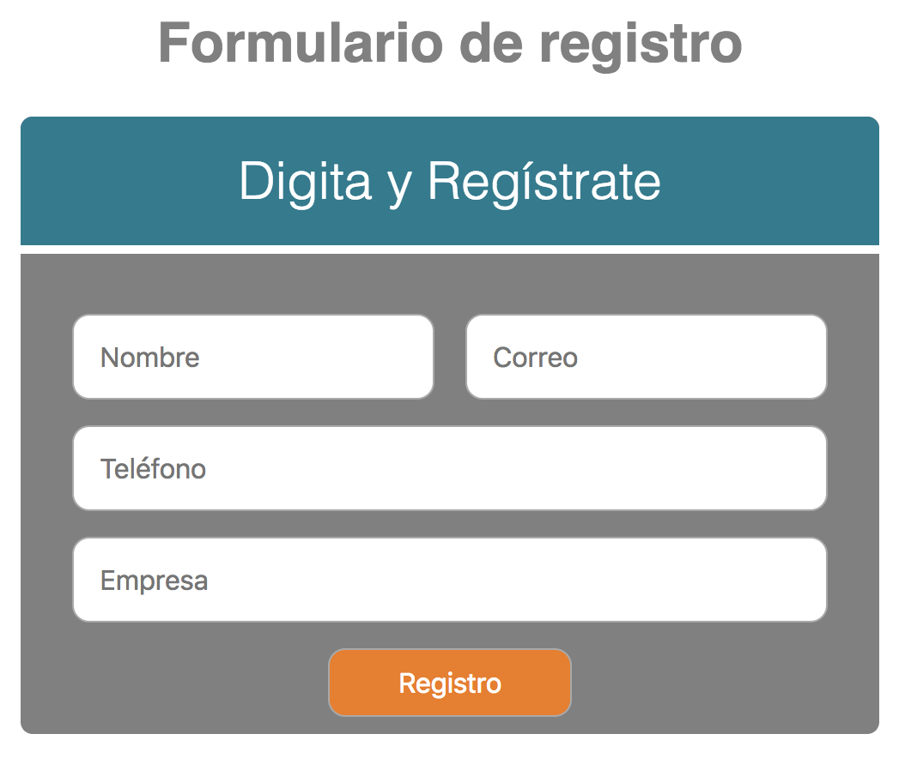

Leer Completo / Abrir y Cerrar Menú
En nuestro medio digital actual se requiere no solo de publicaciones rápidas, consisas, ligeras y funcionales, sino también que se adapten al comportamiento de uso de las personas. en ese sentido cuando hablamos de publicaciones nos referimos a contenidos digitales como videos, imagenes, podcast, noticias, soluciones y como tal lo que nos compete para este caso de estudio, páginas web.
En ese sentido la idea de una página web debe tener el concepto que sea más bien una landing page, eso quiere decir que sea ligera de cargar, concreta, visible desde cualquier dispositivo (Responsive) y que el usuario pueda dejar sus datos personales para que nosotros como empresa y dueña del sitio web, lo podamos contactar.
Para este último en la gran mayoría de los casos se utilizan en las páginas web, formularios de registro que contienen diversos campos que el usuario debe diligenciar y al final con un botón al dar clic la información se carga y almacena en una base de datos para su posterior manejo por parte de los interesados o como tal de una organización.

ejemplo formulario
Por todo lo anterior supongamos que como Ingenieros de Sistemas nos solicitan el desarrollo de una página en donde en una de sus subpáginas exista un formulario de registro.
Por eso nuestro enfoque será la solución de este requerimiento el cual tiene varios aspectos o frentes que nombraremos a continuación y que iremos resolviendo uno a uno en este material de forma local:
Para todo lo anterior utilizaremos la siguiente tecnología:
Para ello vamos a ejecutar el tutorial "Formulario HTML y CSS con conexión a bases de datos" en los siguientes pasos: